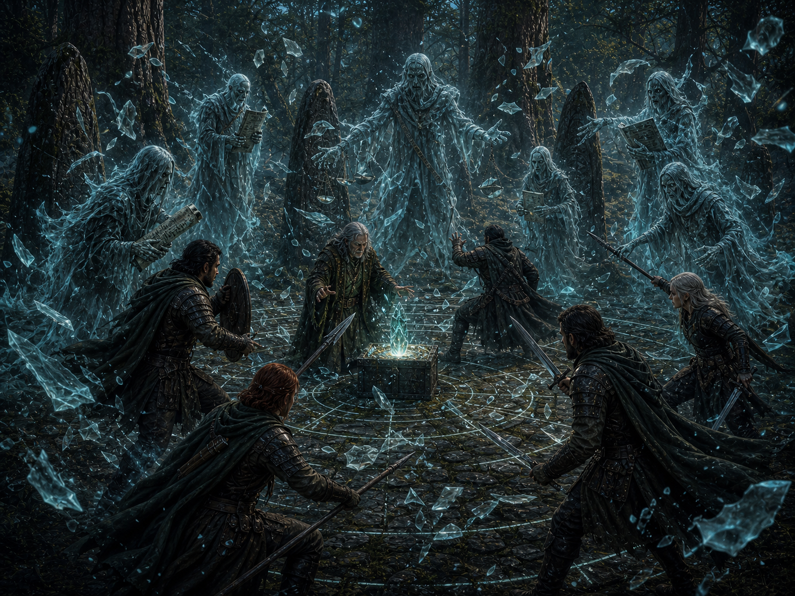

Player-display assets
Media Board
Collect scene images, portraits, object images, handout slots, and send-to-player controls in one place for a second screen.
Prologue
S00-01 · The Job

The party begins inside the system: hired, trusted, and carrying more risk than they know.
NPC Portraits / Object Images / Handout Slots
 Marlowe Fairwind
Marlowe Fairwind Emeris Crown Holdings
Emeris Crown Holdings Keystone Asset
Keystone Asset Goldspire Territories
Goldspire Territories Ward Infrastructure
Ward Infrastructure Route Assurance Contract
Route Assurance Contract Sealed Keystone Crate
Sealed Keystone Crate Emeris Clerk
Emeris ClerkAmbience/music/video slots are planning notes only unless actual files are added.
Act One
S01-01 · Entering Sablewood™ Logistics Preserve

The branded wilderness looks managed until the forest begins quietly disagreeing.
NPC Portraits / Object Images / Handout Slots
 Sablewood™ Logistics Preserve
Sablewood™ Logistics Preserve Goldspire WaymarkersGoldspire Territories
Goldspire WaymarkersGoldspire Territories Old Sable
Old Sable Varian Soto
Varian Soto Barnacle
Barnacle Escort Carriage
Escort Carriage Khari Nix
Khari NixAmbience/music/video slots are planning notes only unless actual files are added.
Act One
S01-02 · The Overturned Vendor Cart

The overturned cart gives the party a mystery before it gives them a fight.
NPC Portraits / Object Images / Handout Slots
 Vendor Cart
Vendor Cart Tamsin Vell
Tamsin Vell Incident Response PlacardKeystone Asset
Incident Response PlacardKeystone Asset HexmartSablewood™ Logistics Preserve
HexmartSablewood™ Logistics Preserve Bramble Strand
Bramble Strand Bramble Union
Bramble UnionAmbience/music/video slots are planning notes only unless actual files are added.
Act One
S01-03 · The Strixwolf Mother

The Strixwolf Mother is dangerous, frightened, and probably not guilty of the murder.
NPC Portraits / Object Images / Handout Slots
 Strixwolf Mother
Strixwolf Mother Strixwolf Pup One
Strixwolf Pup One Strixwolf Pup TwoTamsin VellVendor CartHexmartSablewood™ Logistics PreserveBramble Union
Strixwolf Pup TwoTamsin VellVendor CartHexmartSablewood™ Logistics PreserveBramble UnionAmbience/music/video slots are planning notes only unless actual files are added.
Act One
S01-04 · The First Roll

The first meaningful roll teaches that this adventure is about judgment, not just success.
NPC Portraits / Object Images / Handout Slots
Strixwolf Mother Strixwolf Mercy Track
Strixwolf Mercy Track Corporate Route BellSablewood™ Logistics PreserveMarlowe FairwindBramble Union
Corporate Route BellSablewood™ Logistics PreserveMarlowe FairwindBramble Union Duality Dice
Duality Dice Bramble Union Ambusher
Bramble Union AmbusherAmbience/music/video slots are planning notes only unless actual files are added.
Act Two
S02-01 · The Fallout Investigation

The cart scene becomes evidence of a claim war, not a random wilderness hazard.
NPC Portraits / Object Images / Handout Slots
Vendor CartTamsin VellBramble Strand Torn Shipping Seals
Torn Shipping Seals Route LedgerStrixwolf MotherBarnacleKeystone Asset
Route LedgerStrixwolf MotherBarnacleKeystone AssetAmbience/music/video slots are planning notes only unless actual files are added.
Act Two
S02-02 · Eyes in the Brush

Eyes in the brush turn investigation into an impending tactical decision.
NPC Portraits / Object Images / Handout Slots
Bramble UnionBramble Union Ambusher Bramble Union ClaimrunnerStrixwolf Mercy TrackVarian SotoStrixwolf MotherEscort Carriage
Bramble Union ClaimrunnerStrixwolf Mercy TrackVarian SotoStrixwolf MotherEscort Carriage Garrick Reed
Garrick ReedAmbience/music/video slots are planning notes only unless actual files are added.
Act Two
S02-03 · Bramble Union Ambush

The Bramble Union ambush should feel dangerous and understandable at the same time.
NPC Portraits / Object Images / Handout Slots
Bramble Union AmbusherBramble Union ClaimrunnerKeystone AssetBramble UnionMarlowe Fairwind Reclaimer Personal EffectsEscort CarriageSealed Keystone Crate
Reclaimer Personal EffectsEscort CarriageSealed Keystone CrateAmbience/music/video slots are planning notes only unless actual files are added.
Act Two
S02-04 · After the Ambush

After the fight, the module asks what victory cost and what the party learned.
NPC Portraits / Object Images / Handout Slots
 Bramble Union Loot
Bramble Union Loot Kett Alderhook
Kett Alderhook Vela Bramblewick
Vela Bramblewick Rye Underbough
Rye Underbough Brannic MossveinReclaimer Personal EffectsBramble UnionGarrick Reed
Brannic MossveinReclaimer Personal EffectsBramble UnionGarrick ReedAmbience/music/video slots are planning notes only unless actual files are added.
Act Three
S03-01 · Arrival at Hush

Hush must land as a warm place with jokes inside it, not as the joke.
NPC Portraits / Object Images / Handout Slots
 Hush
Hush Hush™ Community Enclave
Hush™ Community Enclave Clover Co-op
Clover Co-op Firstmoss Launch Festival
Firstmoss Launch Festival Lausa StandworthRoute Assurance ContractSealed Keystone Crate
Lausa StandworthRoute Assurance ContractSealed Keystone CrateAmbience/music/video slots are planning notes only unless actual files are added.
Act Three
S03-02 · Local Clues

Local clues make the infrastructure failure personal and specific.
NPC Portraits / Object Images / Handout Slots
 FidgetLausa Standworth
FidgetLausa Standworth Halython Fives
Halython Fives Whitefire Custodian
Whitefire Custodian Ward Renewal Chime
Ward Renewal Chime Hush Safe Irrigation PathFirstmoss Launch FestivalKeystone Asset
Hush Safe Irrigation PathFirstmoss Launch FestivalKeystone AssetAmbience/music/video slots are planning notes only unless actual files are added.
Act Three
S03-03 · The Clover Co-op

The Clover Co-op gives the party hospitality, texture, and reasons to care.
NPC Portraits / Object Images / Handout Slots

Ambience/music/video slots are planning notes only unless actual files are added.
Act Three
S03-04 · Firstmoss Launch Festival

Firstmoss makes the stakes joyous before the module asks the party to defend them.
NPC Portraits / Object Images / Handout Slots
Firstmoss Launch FestivalHushClover Co-opBrannic MossveinMarlowe FairwindTamsin VellKhari NixKeystone AssetAmbience/music/video slots are planning notes only unless actual files are added.
Act Four
S04-01 · Through the Farms

The road through the farms shifts the story from delivery job to stewardship problem.
NPC Portraits / Object Images / Handout Slots
 Hush FarmsOld SableWhitefire CustodianLausa Standworth
Hush FarmsOld SableWhitefire CustodianLausa Standworth The Hanging Office
The Hanging Office Open Vale™ Ritual SiteSablewood™ Logistics PreserveRoute Assurance Contract
Open Vale™ Ritual SiteSablewood™ Logistics PreserveRoute Assurance ContractAmbience/music/video slots are planning notes only unless actual files are added.
Act Four
S04-02 · The Hanging Office Exterior

The Hanging Office is absurd because the system is absurd; the people inside are not.
NPC Portraits / Object Images / Handout Slots
The Hanging OfficeWhitefire Custodian Inspection-Sealed CounterweightBarnacleGarrick ReedEmeris Clerk
Inspection-Sealed CounterweightBarnacleGarrick ReedEmeris ClerkAmbience/music/video slots are planning notes only unless actual files are added.
Act Four
S04-03 · The Whitefire Custodian

The Whitefire Custodian is a person, not the adventure's magical help desk.
NPC Portraits / Object Images / Handout Slots
Ambience/music/video slots are planning notes only unless actual files are added.
Act Four
S04-04 · The Keystone Reveal

The Keystone Asset stops being cargo and becomes a communal protection problem.
NPC Portraits / Object Images / Handout Slots
Keystone AssetMarlowe FairwindWhitefire CustodianEmeris Crown Holdings Ward Stability TrackSealed Keystone Crate
Ward Stability TrackSealed Keystone Crate Open Vale Ward Lines
Open Vale Ward Lines Dustless Ward Map
Dustless Ward MapAmbience/music/video slots are planning notes only unless actual files are added.
Act Four
S04-05 · Toward Open Vale

The final approach turns understanding into preparation.
NPC Portraits / Object Images / Handout Slots
Open Vale™ Ritual SiteWhitefire CustodianKeystone AssetMarlowe Fairwind Ritual Countdown
Ritual Countdown Short RestVarian SotoSealed Keystone Crate
Short RestVarian SotoSealed Keystone CrateAmbience/music/video slots are planning notes only unless actual files are added.
Act Five
S05-01 · Open Vale™ Ritual Site

Open Vale is where the contract becomes a defense of living infrastructure.
NPC Portraits / Object Images / Handout Slots
Open Vale™ Ritual SiteKeystone Asset Forgotten GodsWhitefire CustodianGoldspire TerritoriesRitual CountdownRoute Assurance ContractMarlowe Fairwind
Forgotten GodsWhitefire CustodianGoldspire TerritoriesRitual CountdownRoute Assurance ContractMarlowe FairwindAmbience/music/video slots are planning notes only unless actual files are added.
Act Five
S05-02 · Short Rest Before the Storm

The short rest is a pressure valve, not dead air.
NPC Portraits / Object Images / Handout Slots
Ambience/music/video slots are planning notes only unless actual files are added.
Act Five
S05-03 · The Ritual Begins

The ritual begins, and the system's unpaid risks answer.
NPC Portraits / Object Images / Handout Slots
Whitefire CustodianKeystone AssetRitual Countdown Legacy Security SkeletonOpen Vale™ Ritual Site
Legacy Security SkeletonOpen Vale™ Ritual Site Soul-Audit Wraith
Soul-Audit Wraith Fear
FearAmbience/music/video slots are planning notes only unless actual files are added.
Act Five
S05-04 · Legacy Security Skeletons

Legacy Security Skeletons are old protection logic with the people scraped out.
NPC Portraits / Object Images / Handout Slots
Legacy Security Skeleton Market CorrectionOpen Vale™ Ritual SiteWhitefire CustodianRitual CountdownGarrick Reed
Market CorrectionOpen Vale™ Ritual SiteWhitefire CustodianRitual CountdownGarrick Reed Slider System
Slider SystemAmbience/music/video slots are planning notes only unless actual files are added.
Act Five
S05-05 · Soul-Audit Wraiths

Soul-Audit Wraiths turn fear, debt, and memory into pressure.
NPC Portraits / Object Images / Handout Slots
Soul-Audit Wraith
UntetheredMarket CorrectionRitual CountdownWhitefire Custodian Soul-Audit Memory ShardRoute LedgerFear
Soul-Audit Memory ShardRoute LedgerFearAmbience/music/video slots are planning notes only unless actual files are added.
Act Five
S05-06 · Market Correction

Market Correction is the system trying to restore profit logic over human safety.
NPC Portraits / Object Images / Handout Slots
Market CorrectionLegacy Security SkeletonOpen Vale™ Ritual SiteMarlowe FairwindWhitefire Custodian Corporate Seal Wax ResidueUntethered
Corporate Seal Wax ResidueUntethered Vulnerable
VulnerableAmbience/music/video slots are planning notes only unless actual files are added.
Act Five
S05-07 · The Ward Locks Into Place

The ward restoration is a reward because Hush can breathe again.
NPC Portraits / Object Images / Handout Slots

Ambience/music/video slots are planning notes only unless actual files are added.
Epilogue
S06-01 · Back in the Hanging Office

Back at the Hanging Office, the party can see how the contract changed them.
NPC Portraits / Object Images / Handout Slots
The Hanging OfficeWhitefire CustodianKeystone AssetHushRoute LedgerRoute Assurance ContractMarlowe FairwindAmbience/music/video slots are planning notes only unless actual files are added.
Epilogue
S06-02 · The Relay Spire Hook

The Relay Spire hook points beyond the one-shot without stealing this ending.
NPC Portraits / Object Images / Handout Slots

Ambience/music/video slots are planning notes only unless actual files are added.